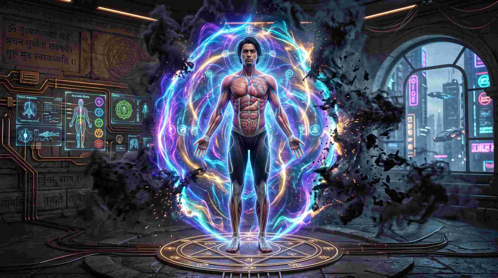
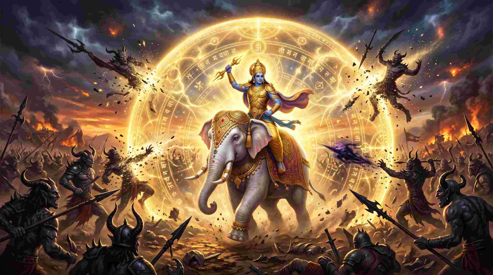
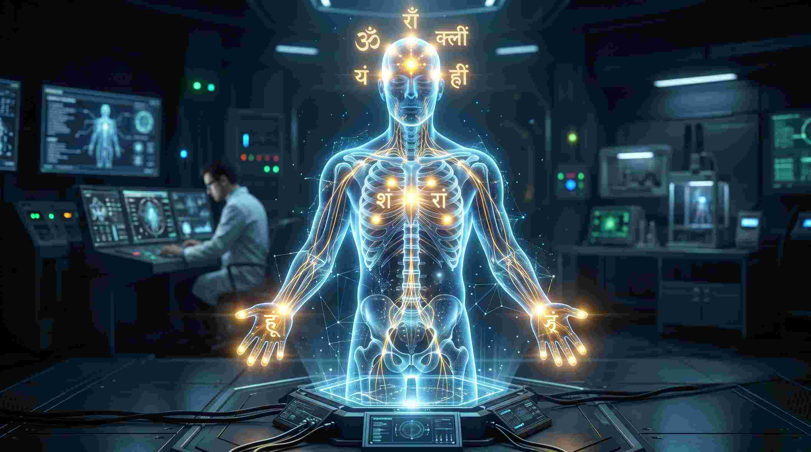

क्या आपको कभी ऐसा महसूस होता है कि कोई अदृश्य नकारात्मक ऊर्जा (Negative Energy) आपके जीवन को रोक रही है? आप मेहनत पूरी करते हैं, लेकिन अचानक दुर्घटनाएं, बीमारियां या अकारण भय आपको घेर लेते हैं। आधुनिक जीवन में तनाव, ईर्ष्या और डिजिटल दुनिया के रेडिएशन ने हमारी मानसिक शांति को बुरी तरह भेद दिया है।
एक मेडिकल छात्र होने के नाते मैं शरीर की एनाटॉमी (Anatomy) पढ़ता हूँ, लेकिन एक वैदिक ज्योतिषी होने के नाते मैं जानता हूँ कि हमारा एक दूसरा शरीर भी है—हमारा सूक्ष्म शरीर या आभा मंडल (Aura / Bio-magnetic field)। जब आपका आभा मंडल कमजोर हो जाता है, तो आप 'कॉस्मिक रेडिएशन' (Cosmic Radiation) और दूसरों की नकारात्मक भावनाओं (Evil Eye/Nazar) का शिकार हो जाते हैं। श्रीमद्भागवत पुराण के छठे स्कंध में वर्णित 'श्री नारायण कवच' (Narayan Kavach) कोई साधारण प्रार्थना नहीं है; यह आपके बायो-मैग्नेटिक फील्ड को 'लॉक' करने और उसे अजेय (Invincible) बनाने का एक ध्वन्यात्मक (Acoustic) अस्त्र है।
"कवच का अर्थ है 'ढाल' (Shield)। नारायण कवच केवल आपको बाहरी दुश्मनों से नहीं बचाता, बल्कि यह आपके न्यूरोलॉजिकल सिस्टम में बैठे उस 'अज्ञात भय' को भी नष्ट कर देता है जो आपको जीवन में आगे बढ़ने से रोकता है।"

1. नारायण कवच का इतिहास: जब देवताओं के राजा भी हार गए थे
श्रीमद्भागवत महापुराण के अनुसार, एक बार देवराज इंद्र से एक भारी भूल हो गई, जिसके कारण उनके गुरु बृहस्पति उनसे रुष्ट होकर चले गए। गुरु के जाते ही देवताओं की शक्ति क्षीण हो गई और असुरों (Demons) ने स्वर्ग पर कब्ज़ा कर लिया। हर तरफ से हारकर जब देवराज इंद्र त्राहि-त्राहि करते हुए ब्रह्मा जी के पास गए, तो उन्होंने इंद्र को 'विश्वरूप' नामक मुनि के पास भेजा।

मुनि विश्वरूप ने देवराज इंद्र को एक गुप्त और महाशक्तिशाली अस्त्र दिया—'नारायण कवच'। मुनि ने कहा, "हे इंद्र! जो भी व्यक्ति इस कवच को धारण कर लेगा, उसे न तो कोई अस्त्र काट सकेगा, न कोई विष मार सकेगा, और न ही कोई नकारात्मक शक्ति उसे छू सकेगी।" इसी कवच को धारण करके इंद्र ने वृत्रासुर जैसे भयंकर राक्षस को हराया और अपना स्वर्ग वापस पाया।
2. न्यास (Nyasa) का रहस्य: शरीर के मर्म बिंदुओं (Acupressure Points) का जागरण
नारायण कवच को पढ़ने से पहले 'न्यास' किया जाता है। न्यास का अर्थ है— शरीर के विशिष्ट अंगों को मंत्र बोलते हुए छूना (Touch)।

मेडिकल साइंस के अनुसार, हमारे शरीर में मेरिडियन्स (Meridians) या मर्म बिंदु (Acupressure Points) होते हैं। जब आप अपनी उंगलियों से हृदय, सिर, नाभि या आंखों को छूते हुए विशिष्ट बीज मंत्रों (Seed Syllables) का उच्चारण करते हैं, तो आप वास्तव में अपने नर्वस सिस्टम (Nervous System) और एंडोक्राइन ग्रंथियों (Endocrine Glands) को एक विशेष 'फ्रीक्वेंसी' (Frequency) पर एक्टिवेट कर रहे होते हैं। इससे आपके शरीर के चारो ओर एक इलेक्ट्रोमैग्नेटिक 'शील्ड' बन जाती है।
कवच से पूर्व ध्यान और अष्टाक्षर मंत्र न्यास:
सबसे पहले हाथ-पैर धोकर (आचमन करके), पूर्व या उत्तर की ओर मुख करके बैठें। 'ॐ नमो नारायणाय' (8 अक्षर) और 'ॐ नमो भगवते वासुदेवाय' (12 अक्षर) मंत्रों से शरीर के अंगों का न्यास करें। यह आपके शरीर को कवच धारण करने (Downloading the frequency) के लिए तैयार करता है।
3. श्री नारायण कवच: सम्पूर्ण पाठ एवं अर्थ (Core Verses)
न्यास करने के बाद, भगवान विष्णु के विश्वरूप का ध्यान करें और नारायण कवच का पाठ शुरू करें। (यहाँ शौनक ऋषि द्वारा वर्णित प्रमुख और सबसे शक्तिशाली श्लोकों का संग्रह अर्थ सहित दिया जा रहा है):
हरिर्विदध्यान्मम सर्वरक्षां
न्यस्ताङ्घ्रिपद्मः पतगेन्द्रपृष्ठे।
दरारिचर्मासिगदेषुचापा-
न्पाशान् दधानोऽष्टगुणोऽष्टबाहुः॥ १ ॥
अर्थ: गरुड़ जी की पीठ पर अपने चरण-कमल रखे हुए, आठों सिद्धियों से युक्त, और अपने आठों हाथों में शंख, चक्र, ढाल, तलवार, गदा, बाण, धनुष और पाश धारण करने वाले भगवान हरि मेरी सब ओर से रक्षा करें।
विज्ञान: यह श्लोक अष्ट-दिशाओं (8 Directions) से आने वाले मनोवैज्ञानिक और भू-चुंबकीय (Geo-magnetic) तनावों को ब्लॉक करता है।
जलेषु मां रक्षतु मत्स्यमूर्ति-
र्यादोगणेभ्यो वरुणस्य पाशात्।
स्थलेषु मायावटुवामनोऽव्यात्
त्रिविक्रमः खेऽवतु विश्वरूपः॥ २ ॥
अर्थ: जल के भीतर भगवान मत्स्य मेरी जलजंतुओं और वरुण के पाश से रक्षा करें। स्थल (पृथ्वी) पर माया से ब्रह्मचारी बने वामन भगवान मेरी रक्षा करें, और आकाश में विश्वरूप श्री त्रिविक्रम भगवान मेरी रक्षा करें।
दुर्गेष्वटव्याजिमुखादिषु प्रभुः
पायान्नृसिंहोऽसुरयूथपारिः।
विमुञ्चतो यस्य महाट्टहासं
दिशो विनेदुर्न्यपतंश्च गर्भाः॥ ३ ॥
अर्थ: दुर्गम स्थानों, जंगलों और युद्ध के मैदान में भगवान नृसिंह मेरी रक्षा करें। जिनके महा-अट्टहास (भयंकर गर्जना) को सुनकर दिशाएं कांप उठी थीं और असुरों की पत्नियों के गर्भ गिर गए थे।
विज्ञान: नृसिंह का यह ध्यान व्यक्ति के एड्रेनालाईन (Adrenaline) को बढ़ाता है और 'सर्वाइवल इंस्टिंक्ट' (Survival Instinct) को चरम पर ले जाकर हर प्रकार के भय (Phobia) को खत्म करता है।
रक्षत्वसौ माध्वनि यज्ञकल्पः
स्वदंष्ट्रयोन्नीतधरो वराहः।
रामोऽद्रिकूटेष्वथ विप्रवासे
सलक्ष्मणोऽव्याद् भरताग्रजोऽस्मान्॥ ४ ॥
अर्थ: रास्तों (यात्रा) में अपनी दाढ़ों पर पृथ्वी को उठाने वाले भगवान वराह मेरी रक्षा करें। पर्वतों के शिखरों पर और परदेश में लक्ष्मण जी के सहित भरत के बड़े भाई भगवान श्री राम मेरी रक्षा करें।
मामुग्रधर्मादखिलात् प्रमादात्
नारायणः पातु नरश्च हासात्।
दत्तस्त्वयोगादथ योगनाथः
पायाद् गुणेशः कपिलः कर्मबन्धात्॥ ५ ॥
अर्थ: भगवान नारायण मुझे उग्र धर्मों (कट्टरता) और हर प्रकार के प्रमाद (लापरवाही) से बचाएं। ऋषि नर मुझे गर्व से, योगेश्वर दत्तात्रेय योग के पतन से, और कपिल मुनि मुझे कर्मों के बंधन से बचाएं।
सनत्कुमारोऽवतु कामदेवात्
हयग्रीवो मां पथि देवहेलनात्।
देवर्षिवर्यः पुरुषार्चनान्तरात्
कूर्मो हरिर्मां निरयादशेषात्॥ ६ ॥
अर्थ: सनत्कुमार मुझे कामदेव (वासना) से, भगवान हयग्रीव मुझे मार्ग में देव-अपराध से, देवर्षि नारद मुझे भगवान की पूजा के अपराधों से, और भगवान कूर्म मुझे सभी प्रकार के नरकों (पापों) से बचाएं।
धन्वन्तरिर्भगवान् पात्वपथ्याद्
द्वन्द्वाद् भयादृषभो निर्जितात्मा।
यज्ञश्च लोकादवताज्जनान्ताद्
बलो गणात् क्रोधवशादहीन्द्रः॥ ७ ॥
अर्थ: आयुर्वेद के जनक भगवान धन्वन्तरि मुझे अपथ्य (गलत भोजन और बीमारियों) से बचाएं। भगवान ऋषभदेव सुख-दुख के द्वंद्व से, भगवान यज्ञ लोक-अपवाद से, भगवान बलराम मनुष्यों के क्रोध से, और भगवान शेषनाग क्रोध के आवेश से मेरी रक्षा करें।
विज्ञान: यह श्लोक सीधे आपके 'गट हेल्थ' (Gut Health) और मनोवैज्ञानिक संतुलन (Psychological balance) के लिए एक सबलिमिनल हीलिंग कमांड (Subliminal healing command) की तरह काम करता है।
द्वैपायनो भगवानप्रबोधाद्
बुद्धस्तु पाषण्डगणप्रमादात्।
कल्किः कलेः कालमलात् प्रपातु
धर्मावनायोरुकृतावतारः॥ ८ ॥
अर्थ: भगवान वेदव्यास मुझे अज्ञानता से, भगवान बुद्ध पाखंडियों के प्रमाद से, और धर्म की रक्षा के लिए अवतार लेने वाले भगवान कल्कि मुझे कलियुग के मलों (पापों और दुष्टों) से बचाएं।
मां केशवो गदया प्रातरव्याद्
गोविन्द आसङ्गवमात्तवेणुः।
नारायणः प्राह्ण उदात्तशक्ति-
र्मध्यन्दिने विष्णुररीन्द्रपाणिः॥ ९ ॥
अर्थ: प्रातःकाल (सुबह) गदा धारण किए हुए भगवान केशव मेरी रक्षा करें। दिन चढ़ने पर बांसुरी लिए हुए भगवान गोविंद, दोपहर से पहले भगवान नारायण, और ठीक दोपहर के समय सुदर्शन चक्र धारी भगवान विष्णु मेरी रक्षा करें।
देवोऽपराह्णे मधुहोग्रधन्वा
सायं त्रिधामावतु माधवो माम्।
दोषे हृषीकेश उतार्धरात्रे
निशीथ एकोऽवतु पद्मनाभः॥ १० ॥
अर्थ: दोपहर के बाद भगवान मधुसूदन, सायं काल (शाम) को भगवान माधव, सूर्यास्त के बाद भगवान हृषीकेश, और आधी रात (Midnight) के समय अकेले भगवान पद्मनाभ मेरी रक्षा करें।
श्रीवत्सधामापररात्र ईशः
प्रत्यूष ईशोऽसिधरो जनार्दनः।
दामोदरोऽव्यादनुसन्ध्यं प्रभाते
विश्वेश्वरो भगवान् कालमूर्तिः॥ ११ ॥
अर्थ: रात के पिछले प्रहर में श्रीवत्सधारी भगवान, भोर (Dawn) के समय तलवार लिए जनार्दन, सूर्योदय के समय भगवान दामोदर, और हर समय कालमूर्ति भगवान विश्वेश्वर मेरी रक्षा करें।
चक्रं युगान्तानलतिग्मनेमि
भ्रमत् समन्ताद् भगवत्प्रयुक्तम्।
दन्दग्धि दन्दग्ध्यरिसैन्यमासु
कक्षं यथा वातसखो हुताशः॥ १२ ॥
अर्थ: हे सुदर्शन चक्र! आपकी नेमि (किनारा) प्रलयकाल की अग्नि के समान तीक्ष्ण है। भगवान विष्णु द्वारा प्रेरित होकर आप चारों ओर घूमें और मेरे शत्रुओं की सेना को वैसे ही जलाकर भस्म कर दें, जैसे हवा की सहायता से आग सूखी घास को जला देती है।
विज्ञान: सुदर्शन चक्र का ध्यान शरीर के मणिपुर चक्र (Solar Plexus) की ऊर्जा को तीव्र करता है, जो पाचन अग्नि (Digestive Fire) और आत्मविश्वास (Confidence) का केंद्र है।
गदेऽशनिस्पर्शनविस्फुलिङ्गे
निष्पिण्ढि निष्पिण्ढ्यजितप्रियासि।
कूष्माण्डवैनायकयक्षरक्षो-
भूतग्रहान् चूर्णय चूर्णयारीन्॥ १३ ॥
अर्थ: हे कौमोदकी गदा! तुम भगवान की अत्यंत प्रिय हो। तुमसे बिजली के समान चिंगारियां निकलती हैं। तुम मेरे शत्रुओं (कुष्मांड, यक्ष, राक्षस, भूत, प्रेत और खराब ग्रहों) को कुचल डालो, उन्हें चूर्ण-चूर्ण कर दो।
त्वं यातुधानप्रमथप्रेतमातृ-
पिशाचविप्रग्रहघोरदृष्टीन्।
दरेन्द्र विद्रावय कृष्णपूरितो
भीमस्वनोऽरेर्हृदानि कम्पयन्॥ १४ ॥
अर्थ: हे पांचजन्य शंख! तुम भगवान श्रीकृष्ण की फूंक से भयंकर शब्द करके मेरे शत्रुओं के हृदय कंपा दो और यातुधान, प्रमथ, प्रेत, पिशाच तथा भयानक दृष्टि वाले राक्षसों को भगा दो।
त्वं तिग्मधारासिवरारिसैन्य-
मीशप्रयुक्तो मम छिन्धि छिन्धि।
चर्मञ्छतचन्द्र छादय द्विषामघोनां
हर पापचक्षुषाम्॥ १५ ॥
अर्थ: हे भगवान की श्रेष्ठ तलवार (नन्दक)! तुम्हारी धार बहुत तीक्ष्ण है। तुम भगवान की प्रेरणा से मेरे शत्रुओं की सेना को काट डालो! हे सैकड़ों चंद्राकार बूंदों वाली ढाल! तुम पापी और दुष्ट शत्रुओं की आंखें बंद कर दो, उन्हें अंधा कर दो।
यन्नो भयं ग्रहेभ्योऽभूत् केतुभ्यो नृभ्य एव च।
सरीसृपेभ्यो दंष्ट्रिभ्यो भूतेभ्योऽंहोभ्य एव वा॥ १६ ॥
सर्वाण्येतानि भगन्नामरूपास्त्रकीर्तनात्।
प्रयान्तु संक्षयं सद्यो ये नः श्रेयःप्रतीपकाः॥ १७ ॥
अर्थ: ग्रहों, केतुओं (पुच्छल तारों), मनुष्यों, सर्प आदि रेंगने वाले जंतुओं, दाढ़ों वाले हिंसक पशुओं, भूतों और पापों से जो भी हमें भय हो; वे सभी जो हमारे कल्याण के विरोधी हैं, भगवान के नाम, रूप, वाहन और अस्त्र-शस्त्रों का कीर्तन करने से तत्काल नष्ट हो जाएं।
गरुडो भगवान् स्तोत्रस्तोभश्छन्दोमयः प्रभुः।
रक्षत्वशेषकृच्छ्रेभ्यो विष्वक्सेनः स्वनामभिः॥ १८ ॥
अर्थ: महान स्तोत्रों द्वारा जिनकी स्तुति की जाती है, वे वेदमय गरुड़ जी और भगवान विष्वक्सेन (भगवान के पार्षद) अपने नामों के उच्चारण से हमें सभी प्रकार की घोर विपत्तियों से बचाएं।
सर्वापद्भ्यो हरेर्नामरूपयानायुधानि नः।
बुद्धिन्द्रियमनःप्राणान् पान्तु पार्षदभूषणाः॥ १९ ॥
अर्थ: भगवान श्रीहरि के पवित्र नाम, रूप, वाहन, अस्त्र-शस्त्र और श्रेष्ठ पार्षद हमारी बुद्धि, इंद्रियों, मन और प्राणों की सभी प्रकार की आपत्तियों से रक्षा करें।
यथा हि भगवानेव वस्तुतः सदसच्च यत्।
सत्येनानेन नः सर्वे यान्तु नाशमुपद्रवाः॥ २० ॥
अर्थ: यह निश्चित सत्य है कि कार्य और कारण (सत् और असत्) रूप में केवल भगवान ही हैं। इस परम सत्य के प्रभाव से हमारे सभी उपद्रव नष्ट हो जाएं।
यथैकात्म्यानुभावेन विकल्परहितः स्वयम्।
भूषणायुधलिङ्गाख्या धत्ते शक्तीः स्वमायया॥ २१ ॥
तेनैव सत्यमानेन सर्वज्ञो भगवान् हरिः।
पातु सर्वैः स्वरूपैर्नः सदा सर्वत्र सर्वगः॥ २२ ॥
अर्थ: जैसे भगवान एक और अद्वितीय हैं, फिर भी अपनी माया से आभूषण, अस्त्र-शस्त्र और शक्तियों को धारण करते हैं—इस सत्य के प्रभाव से सर्वज्ञ और सर्वव्यापी भगवान श्रीहरि अपने सभी स्वरूपों से हमेशा और हर जगह हमारी रक्षा करें।
विदिक्षु दिक्षूर्ध्वमधः समन्तादन्तर्बहिर्भगवान् नारसिंहः।
प्रहापयंल्लोकभयं स्वनेन स्वतेजसा ग्रस्तसमस्ततेजाः॥ २३ ॥
अर्थ: जो अपने भयंकर अट्टहास से लोगों के भय को दूर कर देते हैं और अपने तेज से सबका तेज ग्रस लेते हैं, वे भगवान नृसिंह दिशाओं, विदिशाओं (कोनों), ऊपर, नीचे, बाहर और भीतर—सभी ओर से हमारी रक्षा करें।
मघवन्निदमाख्यातं वर्म नारायणात्मकम्।
विजेष्यसेऽञ्जसा येन दंशितोऽसुरयूथपान्॥ २४ ॥
अर्थ: मुनि विश्वरूप कहते हैं- हे देवराज इंद्र! मैंने तुम्हें यह नारायण कवच सुना दिया है। इससे सुरक्षित होकर तुम असुरों के सेनापतियों को आसानी से जीत लोगे।
एतद् धारयमाणस्तु यं यं पश्यति चक्षुषा।
पदा वा संस्पृशेत् सद्यः साध्वसात् स विमुच्यते॥ २५ ॥
अर्थ: इस कवच को धारण करने वाला पुरुष जिसे भी अपनी आंखों से देख लेता है या अपने पैरों से छू लेता है, वह प्राणी तुरंत हर प्रकार के भय से मुक्त हो जाता है।
न कुतश्चिद् भयमस्य विद्यां धारयतो भवेत्।
राजदस्युग्रहादिभ्यो व्याघ्रादिभ्यश्च कर्हिचित्॥ २६ ॥
अर्थ: इस नारायण कवच रूपी विद्या को धारण करने वाले मनुष्य को राजा, डाकू, दुष्ट ग्रहों और बाघ आदि हिंसक पशुओं से कभी किसी प्रकार का भय नहीं रहता।
4. नारायण कवच के अकल्पनीय लाभ
- अभेद्य सुरक्षा (Invincible Protection): इस कवच का पाठ करने वाले व्यक्ति को कोई तांत्रिक प्रयोग (Black Magic), बुरी नजर (Evil Eye), या शत्रु नुकसान नहीं पहुंचा सकता। यह एक 'अदृश्य शील्ड' बना देता है।
- दुर्घटनाओं से बचाव (Prevention of Accidents): जो लोग बहुत ज्यादा यात्रा (Travel) करते हैं या जिनका कार्य जोखिम भरा है, उन्हें घर से निकलने से पहले इसका पाठ अवश्य करना चाहिए।
- मानसिक शांति और डिप्रेशन से मुक्ति: जिन लोगों को रात में डर लगता है, बुरे सपने आते हैं, या अज्ञात चिंता (Anxiety) सताती है, उनके लिए यह एक अचूक औषधि है। यह कॉर्टिसोल को घटाकर मेलाटोनिन (Melatonin) को बढ़ाता है।
- रोग-प्रतिरोधक क्षमता (Immunity): धन्वन्तरि और नृसिंह भगवान का ध्यान आपकी रोग-प्रतिरोधक क्षमता (Immunity) और 'विल-पावर' (Willpower) को अभूतपूर्व स्तर पर ले जाता है।
5. 30-दिन का नारायण कवच अनुष्ठान (Action Plan)
यदि आप किसी भारी संकट, कानूनी विवाद, या गंभीर स्वास्थ्य समस्या से गुजर रहे हैं, तो इसे एक अनुष्ठान के रूप में अपनाएं:
- समय: ब्रह्म मुहूर्त (सुबह 4:00 से 6:00 बजे) या प्रातः स्नान के तुरंत बाद।
- आसन और दिशा: पीले रंग का आसन बिछाएं और पूर्व (East) या उत्तर (North) की ओर मुख करके बैठें।
- जल का प्रयोग: तांबे के पात्र में थोड़ा जल रखें। पाठ पूरा होने के बाद इस 'ऊर्जित जल' (Charged Water) को स्वयं पिएं और घर के कोनों में छिड़कें।
- संकल्प: पहले दिन हाथ में जल लेकर संकल्प लें कि आप 30 दिन, 41 दिन या 108 दिन तक इसका नित्य पाठ करेंगे।
- न्यास: पाठ से पूर्व अष्टाक्षर या द्वादशाक्षर मंत्र से न्यास अवश्य करें, यह आपके शरीर को कवच की ऊर्जा ग्रहण करने के योग्य बनाता है।
निष्कर्ष: अपनी ऊर्जा को 'लॉक' करना सीखें
हम अपने घर के दरवाजों पर महंगे ताले (Locks) लगाते हैं, अपने मोबाइल फोन में पासवर्ड लगाते हैं, लेकिन अपने सबसे कीमती 'ऊर्जा शरीर' (Energy Body) को खुला छोड़ देते हैं, जहाँ से कोई भी नकारात्मक व्यक्ति या परिस्थिति हमारी ऊर्जा चूस (Drain) ले जाती है।
श्री नारायण कवच आपके उसी ऊर्जा शरीर का 'ब्रह्मांडीय पासवर्ड' और 'अभेद्य ताला' है। जब आप भगवान के विभिन्न अवतारों का आह्वान करते हैं, तो आप वास्तव में ब्रह्मांड के विभिन्न इलेक्ट्रोमैग्नेटिक स्पेक्ट्रम्स (Electromagnetic Spectrums) को अपने बचाव के लिए बुला रहे होते हैं। आज ही इस कवच को अपने जीवन का हिस्सा बनाएं और निर्भय होकर जिएं। "ॐ नमो भगवते वासुदेवाय!"